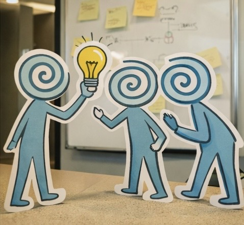

Helping leadership teams become more change ready in real work situations
ChangeReadyLab is a simple digital home for practical tools, reflection, and action around change readiness. The focus is not abstract culture talk. It is how leadership teams actually behave when priorities shift, pressure rises, and alignment becomes harder.
The intellectual engine behind this work is Growth Mindset 2.0. In practical terms, that means understanding how learning, openness, experimentation, feedback, and behavior under pressure show up in day to day leadership work.

We build practical tools and simple digital experiences that help leadership teams assess, discuss, and improve their change readiness. The aim is to make important patterns visible and easier to act on.
We start with real situations, real behavior, and real team dynamics. Then we use light structure, shared language, and practical tools to create better reflection, alignment, and action.
Many leadership teams understand change in theory. The challenge comes when workload rises, decisions become harder, and different views on the same reality start to pull the team apart.
Growth Mindset 2.0 as the intellectual engine
Growth mindset has been part of leadership conversations for years. The challenge is that it often stays too conceptual. Our angle is more practical. Growth Mindset 2.0 is about change readiness in action.
That includes how teams respond to mistakes and setbacks, how openly they discuss concerns, how quickly they learn from real work, how they handle uncertainty, and how willing they are to experiment and adapt.
The goal is not to label teams as fixed or growth minded. It is to help them see where they are now, where they want to go, and what behaviors will help them get there.
What this looks like in practice
- Choose a set of change readiness indicators that fit the current team reality.
- Let team members score current and desired state individually.
- Use the alignment overview to see where perceptions differ inside the team.
- Turn this into sharper dialogue, better prioritization, and practical next steps.
Tools
ChangeReadyLab is being built around a growing set of practical tools. Right now, one tool is live and ready to explore.
Change Readiness Gap Map
A simple assessment and dialogue tool for leadership teams. Teams choose seven indicators, score current and desired state, and see both the gap and the degree of alignment inside the team.
What may come next
- Guided reflection tools tied to day to day leadership situations
- Simple action planning around the top gaps and alignment issues
- More structured team and facilitator guidance
- Shared learning and peer access through a small community layer
Who this is for
ChangeReadyLab is designed first and foremost for leadership teams. It is also relevant for HR, People, L&D, and organizational development functions that want more practical ways to support team alignment and change readiness.
This first website and tool are intentionally modest. The aim is to learn, improve, and build from real use.
Join early and help shape what comes next
If you would like to explore the tools, get updates, or be part of an early peer group around change readiness and leadership team development, the community page is the right place to start.